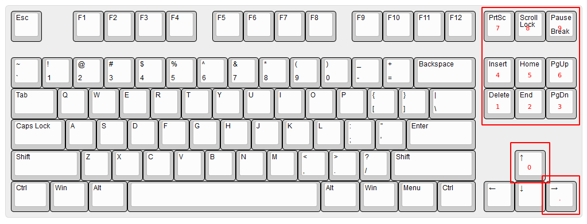

QMK numpad hack for TKL keyboards
Problem
TKL keyboard (“tenkeyless”) means there is no numpad.
Sometimes you want a numpad, so it would be great if there was a hack to get one.
Solution
QMK makes this easy.
I made Scroll lock a key that activates the temporary numpad layer, and for good measure I made the
numpad light up blue.
These are the keys in the numpad layer:

I arranged the keys as close as possible to how they are in a “numpad-ful” keyboard.
(Holding Scroll lock disables the layer)
Demonstration
Here’s me entering 123.4560:
Code

Thanks for reading! 😍
If you like my writing, consider following me on Twitter.
Stay updated on my blog posts & projects - sign up for
my newsletter. 🚀
No spam, unsubscribe any time.
RSS also available.